A imagem ficou ótima na tela do gerador. Aí o cliente pede um banner de 2560 px para o site, um cartaz A3 para a loja e a capa do Reels — e você descobre que o arquivo tem 1536 × 1024 px, que o rosto da Lia “derrete” quando você amplia e que o rótulo do pacote vira borrão no recorte. Esta etapa, que ninguém posta nas redes, é a que separa quem gera imagens de quem entrega imagens.
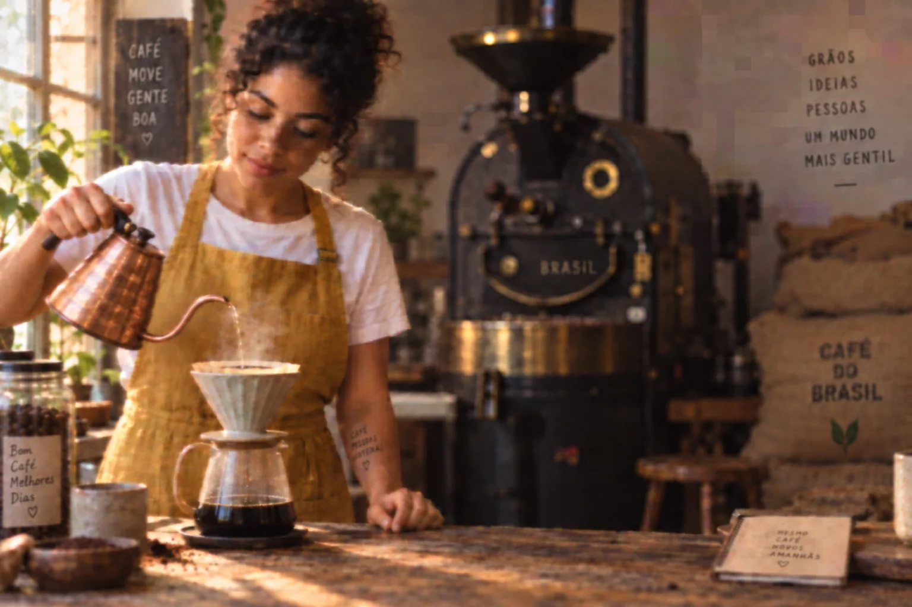
Instrução de edição usada (sobre a imagem-base)
Fully re-render this ENTIRE image as a heavily degraded copy — the damage must be obvious at first glance. It must look like a low-resolution 360p video screenshot that was re-compressed several times: soft and blurry overall, visible blocky JPEG compression artifacts, smeared skin and fabric detail, slight color banding in the background, steam reduced to a vague haze. Keep the same woman, pose, framing, light direction and colors — only the image quality gets worse.
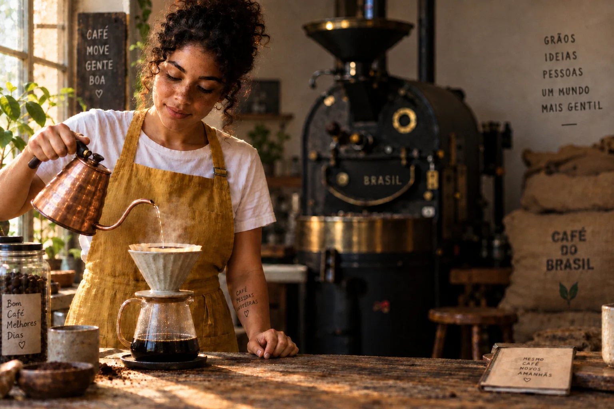
Instrução de edição usada (sobre a imagem-base)
Restore and enhance this low-quality image while treating it as an immutable reference. IDENTITY LOCK: keep the woman's exact face shape, facial geometry, expression, freckle pattern, curly hair and apron; only clean up compression noise, do not beautify or change who she is. SCENE LOCK: keep the exact same background, objects, framing and layout — no new objects, no replacements, no shifts. LIGHT: match the original direction and mood — soft window light from the left, warm 3500K. QUALITY TARGET: as if shot on a professional full-frame camera with an 85mm-class prime at f/2, crisp focus on the eyes and hands, real skin texture with visible pores, linen weave on the apron, clear steam, matte ceramic, subtle natural film grain. AVOID: plastic or airbrushed skin, fake glow, HDR halos, oversharpened edges, dramatic relighting, background changes.
Instrução de edição usada (sobre a imagem-base)
Creatively reimagine and upscale this image with maximum added detail and a glossy high-end advertising look: invent rich new details wherever the image is unclear, make the woman look like a polished beauty-campaign model with flawless glowing skin and perfect styled hair, add dramatic cinematic lighting, add decorative props and extra details to the background to make it feel more luxurious.
As três partem da mesma cópia degradada (à esquerda, a cena da Lia do módulo 1-2 estragada de propósito). No centro, o pedido travou identidade, cenário e luz: volta a textura, e a Lia continua sendo a Lia. À direita, o pedido foi “invente detalhe à vontade”: a imagem fica mais nítida e “publicitária”, com pele lisa e brilhante, luz mais dramática e objetos que não existiam (luminárias pendentes, prateleiras cheias, plantas). A Lia ainda lembra a Lia, mas o cenário já não é o mesmo. Todo este módulo gira em torno dessa escolha.
1Resolução não é detalhe
O que é
Resolução é a contagem de pixels: 1536 × 1024 são cerca de 1,6 milhão de pixels. Detalhe é a informação que esses pixels carregam — cada fio do linho, cada sarda, cada letra do carimbo. Um arquivo de 4000 px feito de um borrão ampliado tem muita resolução e pouco detalhe. Uma foto de celular nítida de 1080 px pode ter mais detalhe útil do que ele.
Por que aprender
Quando você pede “upscale” a uma IA, ela não recupera o que foi perdido: ela adivinha o que provavelmente estava ali, com base em milhões de fotos parecidas. Em textura de madeira ou céu, a adivinhação é inofensiva. Em rosto, mão e texto, a adivinhação pode mudar quem é a pessoa ou o que está escrito. Por isso a pergunta certa nunca é “quanto ampliar”, e sim “quanto eu deixo o modelo inventar”.
De quantos pixels você precisa?
| Uso | Tamanho típico | O arquivo de 1536 × 1024 basta? |
|---|---|---|
| Post de feed / story | 1080 px no lado menor | sim, com recorte |
| Capa de YouTube | 1280 × 720 | sim |
| Banner de site (retina) | 2560 × 1440 | não — ampliar ~1,7× |
| Impressão A4 a 300 DPI | 3508 × 2480 | não — ampliar ~2,3× |
| Cartaz A3 a 300 DPI | 4961 × 3508 | não — ampliar ~3,2× (ou 4× e reduzir) |
Conceitos-chave em ação
Regra de bolso: decida o destino antes de ampliar. Ampliar “para garantir” gera arquivos pesados e multiplica as chances de o modelo inventar algo. Amplie para o maior uso real da peça e gere as outras versões reduzindo a partir dele — reduzir nunca estraga; ampliar sempre arrisca.
2Upscale fiel versus upscale criativo
O que é
Quase toda ferramenta de ampliação por IA tem, com nomes diferentes, o mesmo controle: quanto o resultado pode se afastar da imagem de entrada. Chame de creativity, strength, denoise ou resemblance (este último funciona ao contrário: quanto maior, mais parecido).
| Upscale fiel (conservador) | Upscale criativo (reinterpretação) | |
|---|---|---|
| O que faz | limpa ruído e compressão, reforça bordas e textura existente | redesenha áreas inteiras, adiciona detalhe que não existia |
| Controle típico | criatividade baixa · semelhança alta | criatividade média/alta · semelhança baixa |
| Bom para | retratos, personagem de campanha, produto com rótulo, logotipo, foto de família | paisagem, textura, arte conceitual, ilustração, imagem que ainda é rascunho |
| Risco | resultado “mole” se a entrada for muito ruim | rosto diferente, dedos novos, texto trocado, objetos que não existiam |
Por que aprender
Numa campanha, a Lia precisa ser a mesma em todas as peças (módulo 2-2). Um upscale criativo em uma das imagens pode quebrar a série inteira sem que ninguém perceba na miniatura. Com produto é pior: o rótulo é o que o cliente mais olha. Veja o mesmo teste com um pacote da Terra Alta — primeiro o original nítido, depois a cópia estragada e as duas recuperações:
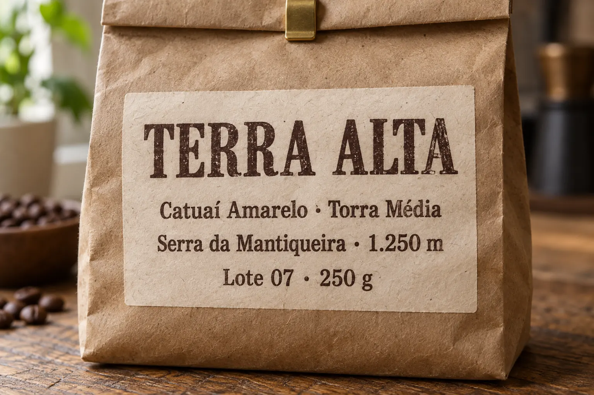
Prompt usado
Close-up product photograph of the front of a kraft-paper coffee bag standing on a worn oak counter. The bag has a cream paper label, hand-stamped in dark brown ink, with exactly this text in four lines: large 'TERRA ALTA' on the first line, then 'Catuaí Amarelo · Torra Média', then 'Serra da Mantiqueira · 1.250 m', then 'Lote 07 · 250 g'. Rough recycled kraft fibers, slightly uneven ink impression, a folded top with a small brass clip. Soft window light from the left, 4000K, gentle shadow to the right. 100mm macro lens at f/5.6, label perfectly sharp and legible, filling most of the frame, warm natural color grade.
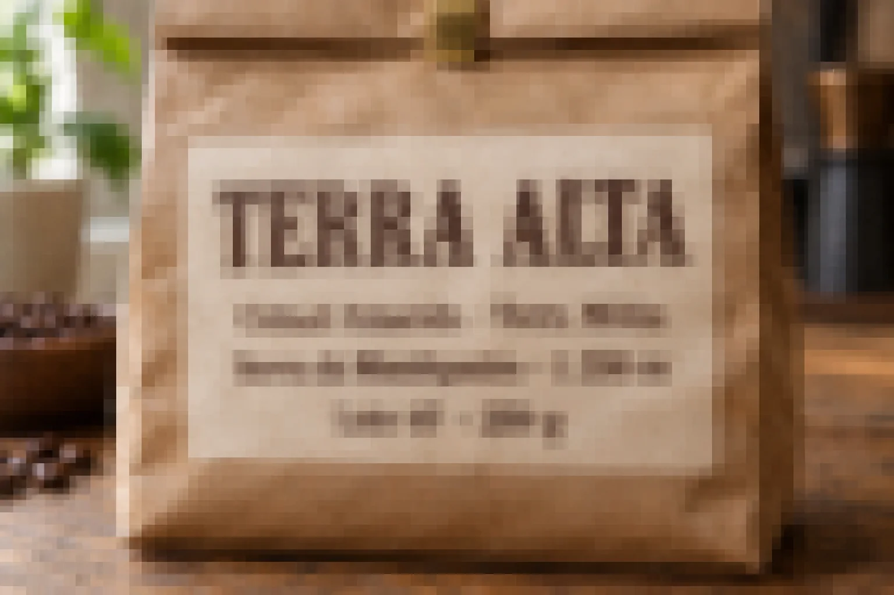
Instrução de edição usada (sobre a imagem-base)
Fully re-render this ENTIRE image as a heavily degraded copy, like a 160-pixel-wide thumbnail enlarged to full size: strong blur, large blocky JPEG compression squares, kraft fibers and wood grain gone. The large 'TERRA ALTA' is still roughly recognizable as a blurry shape, but the three small lines of text below it become unreadable smudges — no individual letters can be read. Keep the same bag, label layout, framing, light and colors.
O original tem quatro linhas legíveis: TERRA ALTA, variedade e torra, região e altitude, lote e peso. Na cópia degradada, a linha grande ainda se reconhece; as pequenas ficam borradas e quebradas em blocos — a informação fina que o modelo precisaria para reconstruí-las já se perdeu.
Conceitos-chave em ação
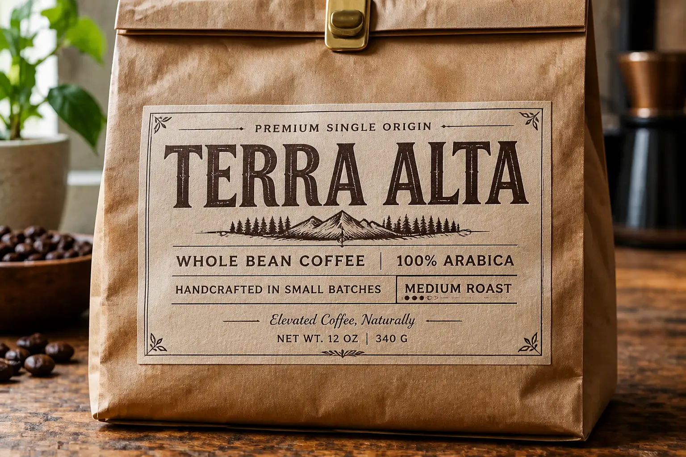
Instrução de edição usada (sobre a imagem-base)
Upscale and creatively enhance this image with lots of new crisp detail. Where the label text is unclear, invent plausible sharp text and decorative typographic details so the label looks rich and premium.
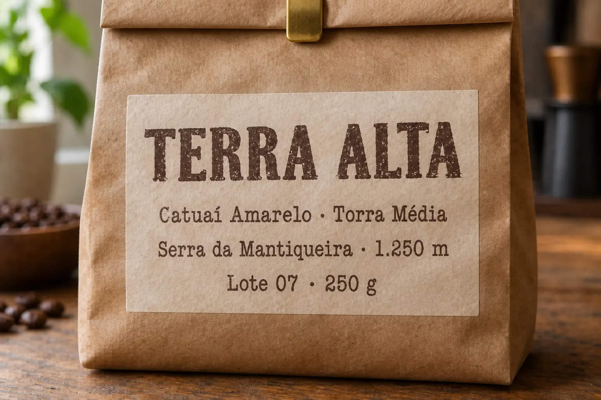
Instrução de edição usada (sobre a imagem-base)
Restore this degraded product photo faithfully. Keep the exact bag, label layout, framing, light and colors. The label text is known and must be reproduced exactly, letter by letter, in the same positions and hand-stamped brown ink style: line 1 'TERRA ALTA', line 2 'Catuaí Amarelo · Torra Média', line 3 'Serra da Mantiqueira · 1.250 m', line 4 'Lote 07 · 250 g'. Recover the rough kraft paper fibers, the slightly uneven ink impression and the oak grain. Do not add new text, logos, ornaments or objects.
Duas edições da mesma cópia degradada. No modo criativo, o modelo preenche as linhas ilegíveis com texto plausível — confira letra por letra com o original acima: o que ele não conseguia ler, ele reescreveu. No modo fiel, o prompt ditou as quatro linhas exatas; é a única forma confiável de recuperar texto: quem sabe o que está escrito é você, não o modelo.
✓ Use o modo fiel quando…
- a pessoa precisa ser reconhecida (cliente, personagem da marca, familiar)
- há texto, número, logotipo ou preço na imagem
- a imagem já foi aprovada e só precisa de mais pixels
✗ Evite o modo criativo quando…
- a série depende de consistência de rosto ou produto
- você não vai conferir a imagem em 100%
- o arquivo vai para impressão sem nova aprovação do cliente
3O prompt-mestre de ampliação
O que é
Ferramentas que aceitam texto junto com a imagem (edição por prompt, image-to-image, alguns upscalers com campo de prompt) respondem muito melhor a um pedido estruturado do que a “melhore esta foto”. O princípio: a imagem original é uma moldura imutável; você só autoriza melhorias dentro dela. Monte o prompt em cinco blocos:
Os cinco blocos
- Trava de identidade — mesmo rosto, geometria facial, expressão, idade, cabelo, roupa. Só limpeza sutil.
- Trava de cena — mesmo fundo, mesmos objetos, mesmo enquadramento. Nada novo, nada trocado, nada deslocado.
- Luz — manter a direção, o ângulo e o clima da original (e, se quiser, só refinar: mais faixa dinâmica, transições suaves).
- Alvo de qualidade — descrever o resultado como se tivesse sido feito com equipamento profissional: câmera full-frame, lente fixa 85 mm, foco crítico nos olhos, textura real de pele, grão sutil.
- Evitar — pele de plástico, brilho falso, halos, nitidez exagerada, luz dramática, troca de fundo, rosto “corrigido”.
Por que aprender
O bloco de câmera funciona como o “estilo” do módulo 1-2: ele não simula um sensor, mas puxa o resultado para a aparência de fotos feitas com aquele tipo de equipamento — nitidez, profundidade de campo, textura. As travas dizem o que não é negociável. O bloco “evitar” existe porque o vício dos modelos é exatamente o oposto do que você quer: alisar pele, acender brilhos e recortar bordas.
Instrução de edição usada (sobre a imagem-base)
Restore and enhance this low-quality image while treating it as an immutable reference. IDENTITY LOCK: keep the woman's exact face shape, facial geometry, expression, freckle pattern, curly hair and apron; only clean up compression noise, do not beautify or change who she is. SCENE LOCK: keep the exact same background, objects, framing and layout — no new objects, no replacements, no shifts. LIGHT: match the original direction and mood — soft window light from the left, warm 3500K. QUALITY TARGET: as if shot on a professional full-frame camera with an 85mm-class prime at f/2, crisp focus on the eyes and hands, real skin texture with visible pores, linen weave on the apron, clear steam, matte ceramic, subtle natural film grain. AVOID: plastic or airbrushed skin, fake glow, HDR halos, oversharpened edges, dramatic relighting, background changes.
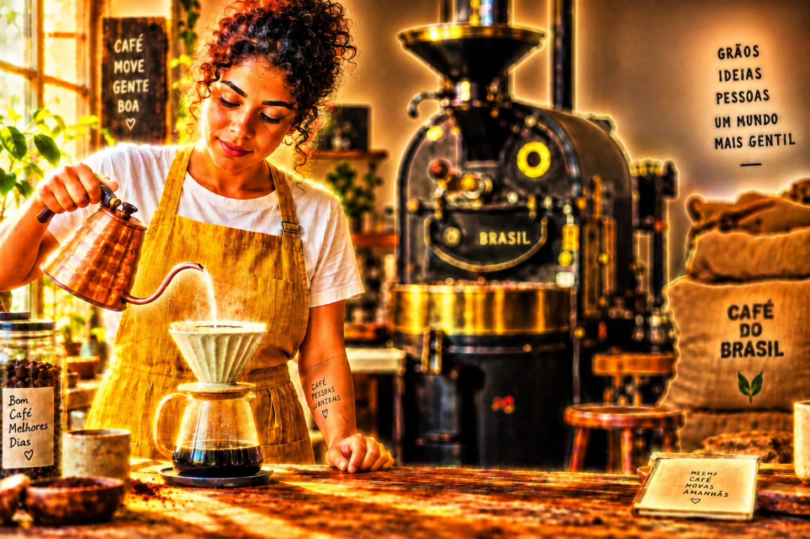
Instrução de edição usada (sobre a imagem-base)
Enhance this image the way a bad one-click 'AI enhance' filter does: extremely smoothed airbrushed plastic skin with no pores, oversaturated colors, strong fake glow around every highlight, heavy HDR halos along edges, crunchy oversharpened hair and fabric. Keep the same woman, pose, framing and background.
As duas partem da mesma cópia degradada. À esquerda, o prompt em cinco blocos (abra “Instrução de edição usada”). À direita, pedimos de propósito o que filtros de um clique costumam fazer: pele sem poros, cores saturadas, brilho em volta das luzes, halos nas bordas. É isso que a lista de negativos impede.
Conceitos-chave em ação
Prompt-mestre de ampliação fiel (retrato)
Objetivo: Recuperar uma imagem de pessoa sem mudar quem ela é nem o cenário. Cole junto com a imagem, em modo edição ou image-to-image.
Restore and enhance this image while treating it as an immutable reference. IDENTITY LOCK: keep the person's exact face shape, facial geometry, expression, age, hair and clothing. Only subtle cleanup of noise and compression; do not beautify or change who they are. SCENE LOCK: keep the exact same background, objects, framing and layout. No new objects, no replacements, no shifts. LIGHT: match the original light direction, angle and mood; only refine it — wider dynamic range, smooth gradations, gentle micro-contrast. QUALITY TARGET: as if shot on a professional full-frame camera with an 85mm prime at f/1.8, critical focus on the eyes, real skin texture with visible pores, natural saturation, subtle film grain, neutral editorial color. AVOID: plastic or airbrushed skin, fake glow, HDR halos, oversharpened edges, dramatic relighting, background changes, face morphing.
Como verificar: Coloque original e resultado lado a lado em 100%: olhos, formato do nariz e da boca, linha do cabelo e objetos do fundo têm de coincidir. Se algo mudou, reforce a trava correspondente ou baixe a criatividade da ferramenta.
Negativos que valem a pena (campo “negative prompt” ou bloco AVOID)
| Em inglês | O que evita |
|---|---|
| no face morphing | rosto “corrigido” ou trocado |
| no background change / no new objects | fundo redesenhado, objetos inventados |
| no over-smoothed skin, no plastic skin | pele de boneca, sem poros |
| no fake glow, no HDR halos | brilho artificial e contorno claro nas bordas |
| no oversharpening | cabelo e tecido “crocantes” |
| no dramatic relighting, no flat lighting | luz trocada ou achatada |
| no new text, keep text exactly as given | letras inventadas em rótulos e placas |
4Restauração de foto antiga
O que é
A Terra Alta quer contar a história da família na página “Nossa origem”, e o único registro do avô cafeicultor é uma cópia de 1968, rasgada e manchada. (A foto abaixo é fictícia, gerada para o exercício.) Restaurar tem três camadas de risco crescente:
| Camada | O que faz | Quanto o modelo inventa |
|---|---|---|
| Limpeza | remove poeira, arranhões, vincos, manchas | pouco — preenche áreas pequenas com o entorno |
| Reconstrução | refaz partes perdidas (canto rasgado, rosto apagado) | muito — o que não existe na foto é imaginado |
| Colorização | atribui cores a uma foto P&B | tudo — nenhuma cor estava registrada |
Por que aprender
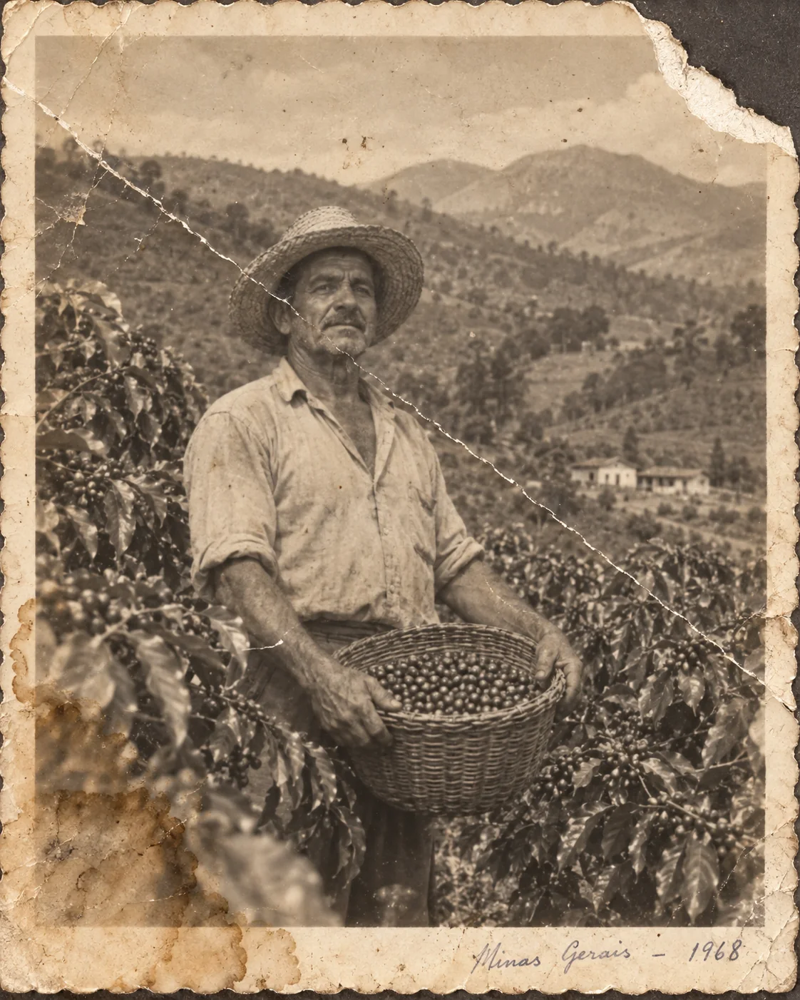
Prompt usado
A damaged old black-and-white family photograph from around 1968, scanned flat: a Brazilian coffee farmer in his 50s with a weathered face, a straw hat and a rolled-sleeve work shirt, standing between coffee shrubs on a hillside farm and holding a woven basket of freshly picked coffee cherries, proud and serious expression, mountains in the background. The print is faded and yellowed toward sepia, with a deep crease running diagonally across the image, cracked emulsion, a torn missing top-right corner, a brown water stain in the lower left, dust specks, fine scratches and a soft slightly out-of-focus look typical of an old amateur camera. White scalloped paper border around the photo.
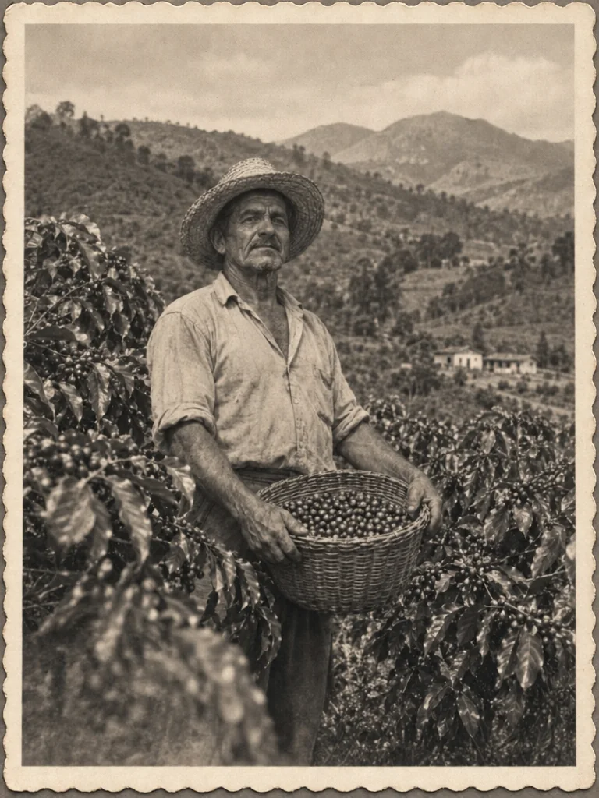
Instrução de edição usada (sobre a imagem-base)
Restore this old photograph conservatively, as a professional photo restorer would. Remove the diagonal crease, cracks, dust, scratches and the water stain; rebuild the torn top-right corner by continuing the sky and mountains naturally. Recover contrast and tonal range but keep it a black-and-white photograph with a slight warm tone, and keep the original soft focus and film grain of the era. IDENTITY LOCK: do not change the man's face, age, expression, hat, clothes, pose, the basket or the landscape. Keep the scalloped paper border. Do not colorize, do not modernize, do not sharpen into a digital look.
A restauração removeu o vinco diagonal, as rachaduras, a mancha d'água e o rasgo do canto, e devolveu contraste — mas o pedido manteve o preto e branco levemente quente, o foco suave e o grão de câmera amadora dos anos 60. Uma foto antiga “nítida como celular” deixa de ser documento e parece falsificação. Mas confira o que sumiu: a anotação a caneta “Minas Gerais – 1968” no rodapé foi apagada junto com as manchas, e o enquadramento abriu um pouco. Numa restauração de verdade, a legenda manuscrita faz parte do documento — peça explicitamente para mantê-la.
Conceitos-chave em ação
Instrução de edição usada (sobre a imagem-base)
Restore this old photograph conservatively, as a professional photo restorer would. Remove the diagonal crease, cracks, dust, scratches and the water stain; rebuild the torn top-right corner by continuing the sky and mountains naturally. Recover contrast and tonal range but keep it a black-and-white photograph with a slight warm tone, and keep the original soft focus and film grain of the era. IDENTITY LOCK: do not change the man's face, age, expression, hat, clothes, pose, the basket or the landscape. Keep the scalloped paper border. Do not colorize, do not modernize, do not sharpen into a digital look.
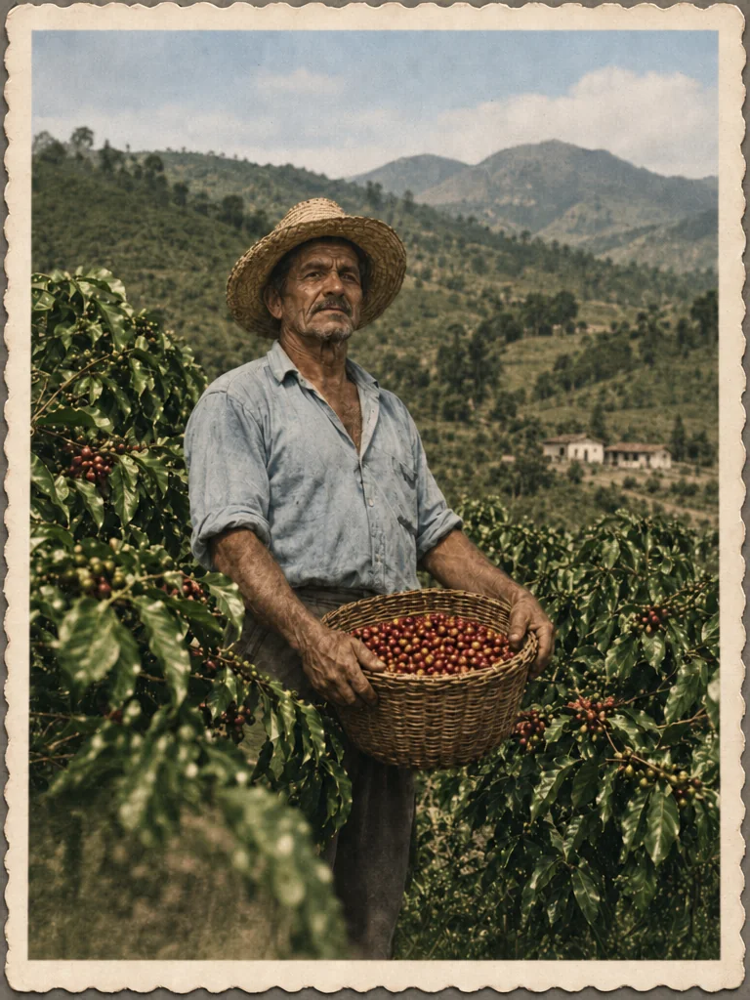
Instrução de edição usada (sobre a imagem-base)
Colorize this restored black-and-white photograph with natural, muted period-accurate colors: deep green coffee leaves, red and yellow ripe coffee cherries in the basket, a faded blue work shirt, natural straw hat, sun-tanned skin, hazy blue-green mountains, a pale sky. Keep the exact same man, face, expression, pose, framing, grain and paper border.
A colorização é bonita e emociona clientes — mas repare que cada cor é uma escolha do modelo: a cor da camisa, o tom da pele, o verde das folhas. Numa peça de marca tudo bem, desde que a legenda diga “colorizada digitalmente”. Numa foto de família, entregue sempre a versão P&B restaurada junto.
Prompt de restauração conservadora
Objetivo: Limpar e recuperar uma foto antiga sem modernizá-la nem trocar a pessoa.
Restore this old photograph conservatively, as a professional photo restorer would. Remove creases, cracks, dust, scratches and stains; rebuild missing or torn areas by continuing the surrounding content naturally. Recover contrast and tonal range, but keep it a black-and-white photograph with its original slight warm tone, soft focus and film grain of the era. IDENTITY LOCK: do not change the person's face, age, expression, hair, clothes or pose. Keep the original framing and paper border. Do not colorize, do not modernize, do not sharpen into a digital look.
Como verificar: Compare o rosto com o original em 100%. Se o modelo “rejuvenesceu” a pessoa ou fechou demais o foco, reforce “keep the original soft focus” e rode de novo.
✓ Restauração responsável
- guardar o scan original intocado
- escanear em alta (600 DPI ou mais) antes de qualquer edição
- entregar P&B restaurada + colorizada, rotuladas
- avisar o cliente que áreas perdidas foram reconstruídas
✗ Armadilhas
- pedir “make it look like a modern photo”
- reconstruir um rosto quase apagado e apresentar como fiel
- restaurar foto de pessoa real sem autorização da família
- descartar o arquivo original
5Recorte + ampliação para detalhes
O que é
Muitas vezes a peça que o cliente quer está dentro de uma imagem que já existe: as mãos da Lia no coador dariam um ótimo story. Recortar esse pedaço da imagem de 1536 px deixa um arquivo de uns 380 px de largura — ampliado para a tela, fica mole e pixelado. O fluxo profissional é recortar, tratar o recorte como uma imagem nova (ampliação fiel com prompt de plano-detalhe) e só então exportar.
Por que aprender
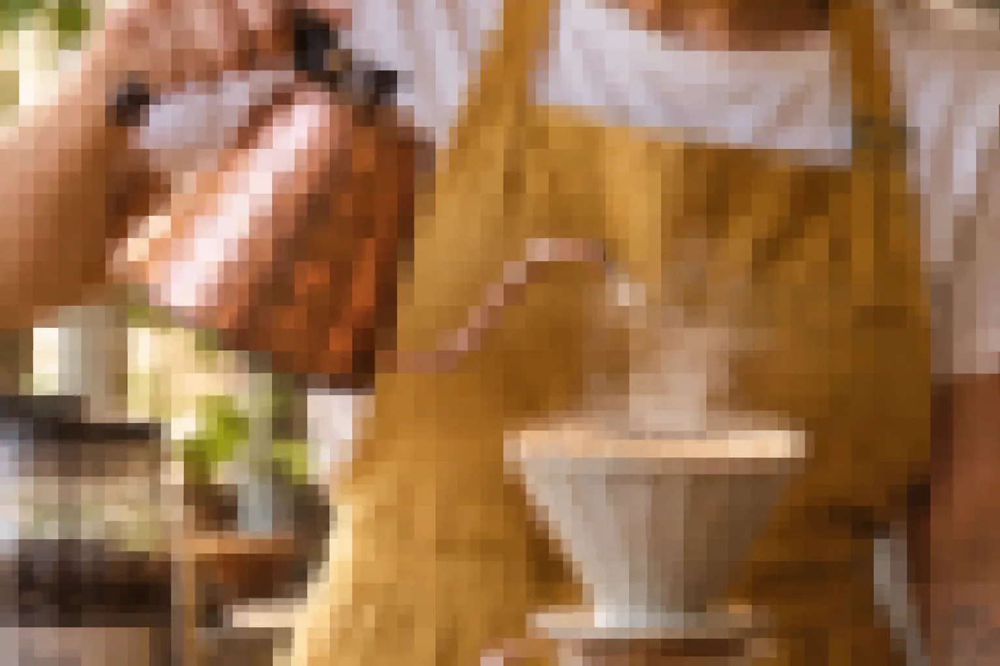
Instrução de edição usada (sobre a imagem-base)
Fully re-render this ENTIRE image as a heavily degraded copy: first crop tightly to the area around Lia's hands, the copper kettle spout and the ceramic dripper, then make it look like a 120-pixel-wide thumbnail of that crop enlarged to full size: strong blur, large blocky JPEG compression squares clearly visible everywhere, smeared edges, no fine texture at all on copper, ceramic or skin, no new detail added. Keep the exact same colors, light and objects.
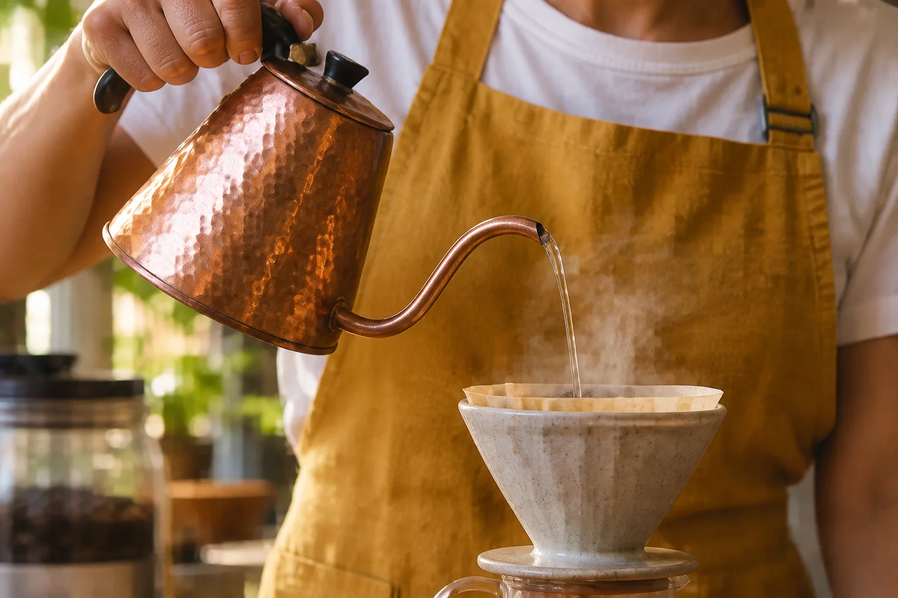
Instrução de edição usada (sobre a imagem-base)
Enhance this enlarged crop into a clean, sharp macro detail shot while keeping the exact composition, objects, hand position and colors. Reconstruct believable fine detail only: hammered texture and small scratches on the copper kettle, the thin stream of water, rising steam, matte speckled glaze on the dripper, skin creases and short nails on the hands. Soft window light from the left, warm 3500K, 100mm macro look. No new objects, no change of hand pose, no fake glow.
À esquerda, o recorte das mãos, da chaleira e do coador ampliado como um zoom digital: sem detalhe fino. À direita, a mesma área depois de uma edição que pediu textura crível — cobre martelado, fio de água, vapor, esmalte salpicado, pele das mãos — mantendo a posição das mãos e dos objetos. Confira se nada “mudou de lugar”: esse é o teste do recorte.
Conceitos-chave em ação
Fluxo do recorte
- Escolha a área e recorte já na proporção final (9:16 para story, 4:5 para feed).
- Deixe margem: recorte um pouco maior do que o necessário — a ampliação come as bordas.
- Amplie em modo fiel com um prompt de plano-detalhe que descreva os materiais daquela área.
- Compare com o recorte bruto: posição de dedos, objetos e reflexos tem de bater.
- Exporte no tamanho da plataforma e registre na ficha que a peça é “recorte de” tal imagem.
6Formatos de entrega por plataforma
O que é
Referência de formatos (confira as diretrizes atuais de cada plataforma — elas mudam)
| Destino | Proporção | Pixels recomendados | Cuidados |
|---|---|---|---|
| Instagram — feed retrato | 4:5 | 1080 × 1350 | ocupa mais tela que o quadrado; o grid do perfil mostra um recorte central |
| Instagram — feed quadrado | 1:1 | 1080 × 1080 | bom para carrossel de produto |
| Instagram — Reels e story | 9:16 | 1080 × 1920 | deixe ~250 px livres no topo e ~350 px na base (interface e legenda cobrem) |
| YouTube — thumbnail | 16:9 | 1280 × 720 | rosto e título legíveis em miniatura; canto inferior direito tem o tempo do vídeo |
| Site — hero / banner | 16:9 ou 21:9 | 1920 × 1080 a 2560 × 1440 | versão 4:5 para celular; WebP ou AVIF, idealmente < 400 KB |
| Impressão — A4 / A3 | ≈ 1:1,41 | 3508 × 2480 (A4) · 4961 × 3508 (A3) a 300 DPI | sangria de 3 mm por lado; peça à gráfica o perfil de cor |
Por que aprender
Gerar sempre em 3:2 e “recortar depois” funciona para 16:9 e 4:5, mas um recorte 9:16 centralizado numa imagem com o sujeito no terço esquerdo corta a pessoa ao meio. O recorte tem de seguir o sujeito, e às vezes não há imagem suficiente — aí se gera uma versão vertical ou se expande o quadro (outpainting, módulo 3-1).
Conceitos-chave em ação
Faça a conta antes de prometer uma peça: o recorte 9:16 de uma imagem de 1536 × 1024 tem só 576 px de largura. Para chegar aos 1080 px do story você precisa ampliar quase 2× — em modo fiel, porque a Lia está no quadro. Se a campanha tem muitas peças verticais, é mais barato gerar a imagem-mestre vertical desde o início.
✓ Exportação correta
- sRGB para tela; perfil pedido pela gráfica para impressão
- JPG qualidade 85–90 ou WebP para web
- PNG só quando há transparência ou texto fino
- tamanho exato da plataforma (evita a recompressão dela)
✗ Erros que o cliente percebe
- mandar 1536 px para um cartaz A3
- PNG de 12 MB para um banner de site
- título dentro da faixa coberta pela interface do Reels
- exportar em perfil de cor largo e ver as cores lavadas no celular
7Nome de arquivo, ficha de geração e checagem final
O que é
Um bom nome de arquivo responde, sem abrir a imagem: de quem, de qual campanha, que peça, qual versão, que formato. Use minúsculas, sem acento nem espaço, com hífen dentro de cada campo e sublinhado entre campos:
Convenção de nomes
cliente_campanha_peca_variacao_versao_formato-largura.ext terraalta_manhas-na-serra_lia-retrato_85mm-janela_v03_4x5-1080.jpg terraalta_manhas-na-serra_lia-retrato_85mm-janela_v03_9x16-1080.jpg terraalta_manhas-na-serra_pacote-rotulo_macro_v02_a3-print.tif terraalta_origem_foto-1968_restaurada-pb_v01_4x5-2400.jpg
Por que aprender
A ficha de geração é o que transforma um resultado de sorte em algo repetível (módulo 2-1): prompt, modelo, configurações, referências, semente, edições e ampliação. Guarde-a ao lado da imagem, com o mesmo nome e extensão .json ou .md.
Ficha de geração (modelo)
{
"arquivo": "terraalta_manhas-na-serra_lia-retrato_85mm-janela_v03_4x5-1080.jpg",
"data": "2026-09-25",
"uso": "post de feed 4:5 — lançamento do café de outono",
"ferramenta": "<gerador e versão — confira na ferramenta>",
"prompt": "<prompt exato>",
"negativos": "no plastic skin, no fake glow, no new objects",
"referencias": ["lia-mestre_v01.png (identidade)"],
"configuracoes": { "proporcao": "3:2", "semente": "<se a ferramenta mostrar>" },
"edicoes": ["fundo limpo (edição por prompt)", "recorte 4:5 seguindo o sujeito"],
"ampliacao": { "ferramenta": "<upscaler>", "modo": "fiel", "fator": "2x" },
"exportacao": { "formato": "JPG q88", "pixels": "1080x1350", "cor": "sRGB" },
"aprovado_por": "<cliente>, <data>"
}
Conceitos-chave em ação
Checagem final (antes de clicar em enviar)
- Identidade: rosto lado a lado com a imagem-mestre aprovada, em 100%.
- Mãos e anatomia: contar dedos, conferir junções de braço, orelhas, dentes.
- Texto: ler rótulos, placas e preços letra por letra, em voz alta.
- Bordas e pele: procurar halos, contornos duplos, pele de plástico, repetições de textura.
- Formato: proporção, pixels, peso do arquivo, área segura respeitada.
- Cor: abrir no celular e num segundo monitor; conferir sRGB.
- Nome e ficha: arquivo nomeado no padrão, ficha salva ao lado, versão aprovada marcada.
- Transparência: se a plataforma ou o cliente pedir, rotular como imagem gerada/editada com IA (confira as regras atuais de cada rede).
Ninguém elogia uma entrega bem nomeada. Mas todo cliente lembra do cartaz impresso com o rótulo errado.
Prática guiada: leve uma imagem do seu projeto até a entrega
Escolha a melhor imagem do seu cliente até aqui (ou a imagem-mestre da Lia). Você vai prepará-la para três destinos — um vertical, um horizontal e um de alta resolução — com nome, ficha e checagem.
Roteiro
- Liste os três destinos e anote, para cada um, proporção e pixels (tabela do tópico 6).
- Calcule quanto precisa ampliar para o maior destino. Se for mais que 2×, planeje duas passadas.
- Rode uma ampliação fiel com o prompt-mestre abaixo (ou o upscaler da sua ferramenta com criatividade baixa).
- Para comparar, rode uma criativa na mesma imagem. Coloque as duas lado a lado em 100% e anote três diferenças.
- Faça os recortes seguindo o sujeito, respeitando a área segura do vertical.
- Exporte, nomeie no padrão e preencha a ficha. Passe a checagem final item por item.
Ampliação fiel para produto com texto
Objetivo: Recuperar ou ampliar uma foto de produto sem que o rótulo seja reinventado. Troque o texto entre < > pelo texto real do seu rótulo.
Restore and enhance this product photo faithfully. Keep the exact product, label layout, framing, light direction and colors. The label text is known and must be reproduced exactly, letter by letter, in the same positions and typographic style: line 1 '<TEXTO DA LINHA 1>' line 2 '<TEXTO DA LINHA 2>' line 3 '<TEXTO DA LINHA 3>' Recover believable material detail: <material 1>, <material 2>, <superfície de apoio>. As if shot with a 100mm macro lens at f/5.6, label perfectly sharp. AVOID: new text, new logos, ornaments, extra objects, fake glow, oversharpened edges.
Como verificar: Leia o rótulo em voz alta comparando com o texto do prompt. Uma letra trocada já reprova a peça — gere de novo ou corrija o texto num editor de imagem.
Lição de casa
Seu cliente vai publicar uma campanha em três lugares e imprimir um cartaz. Você tem uma imagem-mestre aprovada em tamanho padrão do gerador. O trabalho é entregar tudo pronto, sem mudar a pessoa nem o produto.
Nível básico (obrigatório)
- Pegue uma imagem aprovada do seu projeto e produza três versões: 4:5 (1080 × 1350), 9:16 (1080 × 1920) e 16:9 (1920 × 1080), com recortes que sigam o sujeito.
- Amplie a imagem uma vez em modo fiel e uma vez em modo criativo. Monte um antes/depois com um recorte em 100% do rosto ou do rótulo e escreva 3–5 frases sobre o que cada modo mudou.
- Nomeie todos os arquivos na convenção do módulo e preencha uma ficha de geração para a versão final.
- Passe a checagem final e anote o que você corrigiu por causa dela.
Nível avançado (desafio)
- Restauração: escaneie (ou fotografe com cuidado) uma foto antiga de família ou de acervo com autorização. Entregue scan original, restauração P&B conservadora e versão colorizada rotulada, com uma nota explicando o que foi reconstruído.
- Arte-final para impressão: prepare a imagem para um cartaz A3 a 300 DPI (4961 × 3508 com 3 mm de sangria), em duas passadas de ampliação fiel, e documente cada passada na ficha com um recorte em 100% de olhos ou texto.
Entregue/guarde: Pasta “entrega” do projeto com os arquivos finais nomeados, a ficha de cada peça, o antes/depois fiel × criativo e a checagem final preenchida.
Teste sua decisão
1. A imagem da campanha tem a Lia em primeiro plano e o rótulo do pacote legível. Você precisa ampliá-la 2,3× para um A4. Qual configuração escolher?
Consultar a explicação
Com pessoa reconhecível e texto, o risco do modo criativo é trocar rosto e letras. O fiel preserva; ditar o texto é a única forma confiável de mantê-lo correto. Interpolação com nitidez forte só estica pixels e cria halos.
2. Na restauração de uma foto de família de 1968, o que NÃO deve entrar no prompt?
Consultar a explicação
Modernizar apaga a época e faz o modelo redesenhar o rosto com a aparência de hoje. Restauração conservadora mantém grão, foco e tom da foto original e trava a identidade.
3. Você recortou em 9:16, centralizado, uma imagem 3:2 em que a Lia está no terço esquerdo. O que aconteceu e como resolver?
Consultar a explicação
Num 3:2, a faixa vertical 9:16 é estreita (576 px de largura em 1536). Centralizada, ela pega o meio do quadro, não o terço onde está a Lia. Desloque o recorte para o sujeito — e, como a faixa é estreita, amplie em modo fiel ou gere a versão vertical.
Responder não marca a leitura nem bloqueia o próximo módulo.
O que levar desta aula
- Resolução é quantidade de pixels; detalhe é informação. Ampliar por IA é adivinhar o que falta — decida quanto deixar o modelo inventar.
- Pessoa reconhecível, texto e produto aprovado pedem upscale fiel; o criativo fica para paisagem, textura e rascunho.
- Prompt de ampliação em cinco blocos: trava de identidade, trava de cena, luz, alvo de qualidade e o que evitar.
- Restaurar é conservar: limpe, reconstrua com aviso, colorize rotulando — e guarde o original.
- Decida o destino antes de ampliar: formato, pixels e área segura de cada plataforma; o recorte segue o sujeito.
- Nome no padrão + ficha de geração + checagem final em 100% = entrega que dá para refazer daqui a um ano.